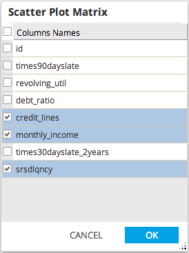
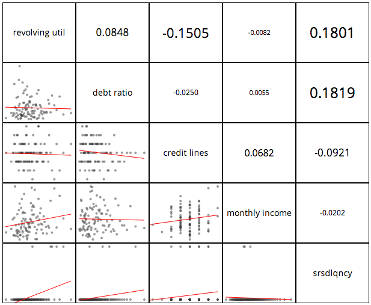

Scatter Plot Matrix Chart
- Use Scatter Plot Matrix to create a scatter plot matrix of the specified columns in the dataset.
- Database operators must output a table/view for Scatter Plot Chart to be enabled.
- Hadoop operators must store results for Scatter Plot Chart to be enabled.
- Scatter Plot Matrix is accessible from the Explore menu of the operator toolbar or by right-clicking an appropriate operator.
- Choose a set of numeric columns to view a scatter plot matrix.
- Double-click a small scatter plot, to reveal a full size scatter plot.

